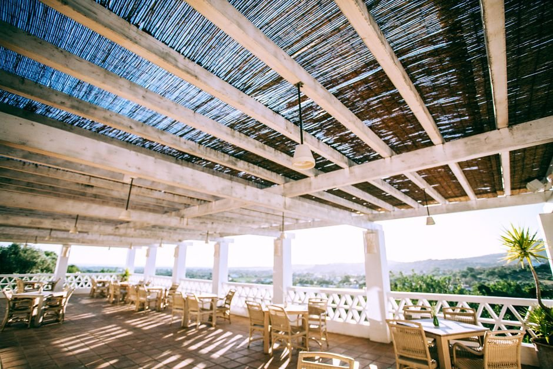
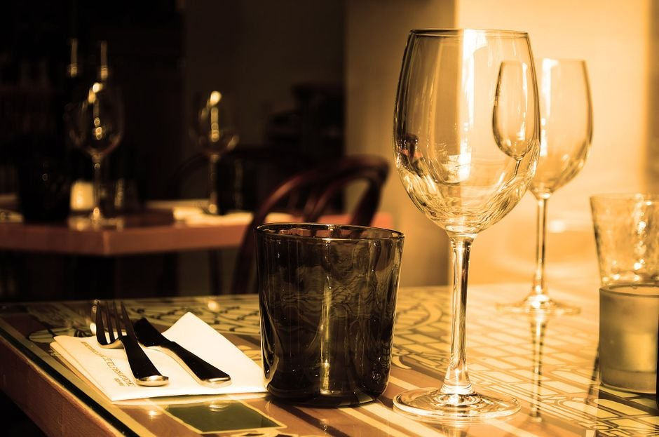
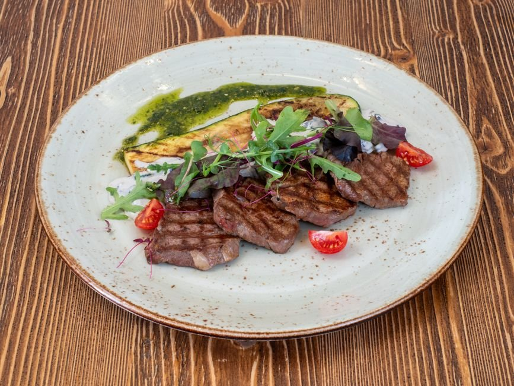
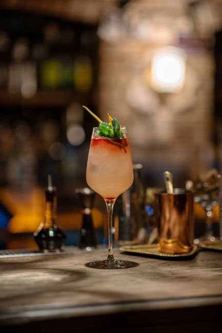

Elegancia frente al río, momentos inolvidables.
Una propuesta gastronómica vibrante en la Costanera Norte de Buenos Aires. Pescados, mariscos, cortes a la parrilla y coctelería de autor.
Naturaleza, calidez y alta gastronomía

Atmósfera Íntima & Exclusiva
Iluminación tenue, mantelería impecable y un servicio dedicado a transformar cada almuerzo o cena en una ocasión memorable.

Parrilla & Sabores de Mar
Cortes seleccionados, pesca fresca y recetas inspiradas en la epopeya atlántica.

Coctelería Creativa
Tragos de autor diseñados para maridar cada momento frente a la brisa del Río de la Plata.
Lo que dicen nuestros comensales
"Celebramos nuestro tercer aniversario aquí y fue encantador. Todo estuvo delicioso y los tragos excelentes. El servicio fue increíble, muy atento sin ser molesto, e incluso nos dieron un shot de cortesía. El lugar tiene estacionamiento propio."
"Garibaldi es un restaurante moderno y elegante sobre la costa del Río de la Plata en Buenos Aires. La decoración es muy actual, ideal para una salida nocturna. La carta de cócteles es muy creativa y sabrosa. Las entradas y postres, como el tiramisú, estuvieron estupendos."
"Muchas gracias por recibirnos. Tuvimos una experiencia fantástica. La atención de nuestro mozo hizo que la estancia fuera mucho más agradable. Estamos deseando volver pronto."
"Un hermoso lugar de categoría con vistas al río para almorzar. El ceviche fue excelente, el ambiente es muy cálido y acogedor, y el servicio sumamente amable y rápido."
En la Costanera Norte
Ubicados a orillas del Río de la Plata, contamos con estacionamiento privado y una vista inigualable.
Av. Costanera Rafael Obligado 4899, C1428 Cdad. Autónoma de Buenos Aires, Argentina
- Lunes: Cerrado
- Martes a Jueves: 12:00 – 00:00 hs
- Viernes y Sábado: 12:00 – 00:30 hs
- Domingo: 12:00 – 00:00 hs